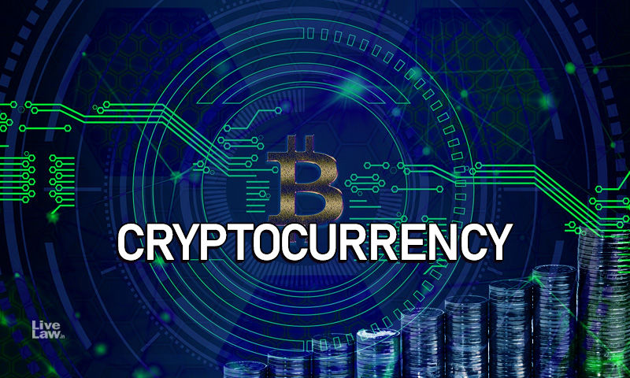

가상화폐(假想 貨幣, virtual currency 또는 virtual money)는 지폐나 동전과 같은 실물이 없이 네트워크로 연결된 특정한 가상공간(vitual community)에서 전자적 형태로 사용되는 디지털 화폐 또는 전자화폐를 말한다. 암호화폐는 가상화폐의 일종이라고 볼 수도 있다. 하지만 유럽 중앙은행이나 미국 재무부의 가상화폐 정의를 엄격하게 적용하면 가상화폐라고 부를 수 있는 암호화폐는 거의 없게 된다. 그래서 미국 재무부 금융범죄단속반(FinCEN)에서는 암호화폐를 가상화폐라고 부르지 않는다. 최근 대한민국에서는 가상자산으로 불리기도 한다. 암호화폐(暗號貨幣, cryptocurrency)도 가상화폐의 일종이다. 비트코인 등은 암호화폐에 속한다. 가상화폐나 디지털 화폐는 카카오 페이나 네이버 페이 등 가상 공간에서 결제할 수 있는 온라인 지급 결제 수단은 모두 포함한다. 유사한 용어로 디지털 화폐나 전자 화폐라는 용어가 있다. 디지털로 화폐의 주고받음을 표현하는 화폐를 말한다.
기존 법정화폐와의 가장 큰 차이는 종속성이다. 법정화폐는 화폐로써 작동하기 위해 모종의 중앙 화폐 시스템을 갖춘 합리적인 경제체제가 필요하고, 중앙에서 화폐에 대한 모든 권리를 제어한다. 다시 말해 중앙에서 비합리적으로 운영한다거나 가치를 조작한다거나 하면 자신의 재산이 물거품이 되는 광경을 지켜봐야만 한다. 하지만 암호화폐는 블록체인 기술 덕분에 후술할 단점에도 불구하고 발행 주체에 의한 가치 조작 문제에서 비교적 자유롭다. 집단지성, 탈중앙화된 자율 조직, 암호화 등 혁신적인 IT기술과 이데올로기로 현재 여러 국면에서 주목받고 있는 기술이다.